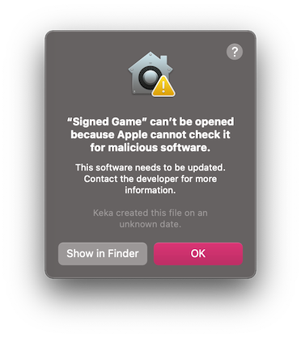
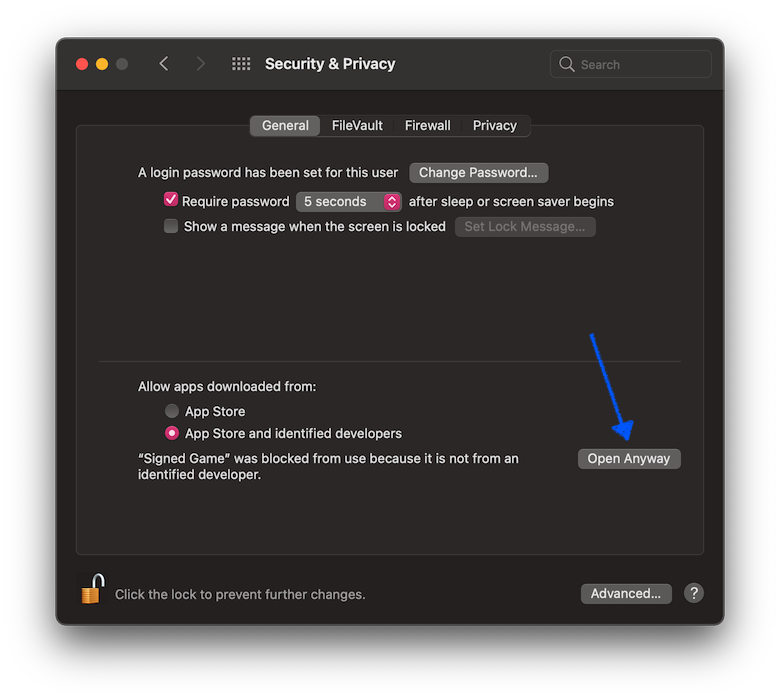
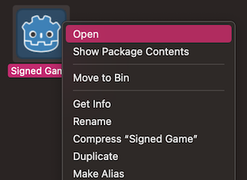
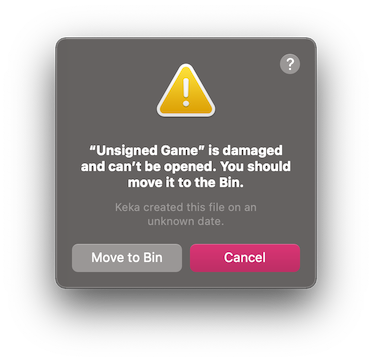

Running Godot apps on macOS
See also
This page covers running Godot projects on macOS. If you haven't exported your project yet, read Exporting for macOS first.
By default, macOS will run only applications that are signed and notarized.
Note
When running an app from the Downloads folder or when still in quarantine,
Gatekeeper will perform path randomization as a security measure.
This breaks access to relative paths from the app, which the app relies upon to work.
To resolve this issue, move the app to the /Applications folder.
In general, macOS apps should avoid relying on relative paths from the application folder.
Depending on the way a macOS app is signed and distributed, the following scenarios are possible:
App is signed, notarized and distributed via App Store
Note
App developers need to join the Apple Developer Program, and configure signing and notarization options during export, then upload the app to the App Store.
The app should run out of the box, without extra user interaction required.
App is signed, notarized and distributed outside App Store
Note
App developers need to join the Apple Developer Program, and configure signing and notarization options during export, then distribute the app as ".DMG" or ".ZIP" archive.
When you run the app for the first time, the following dialog is displayed:

Click Open to start the app.
If you see the following warning dialog, your Mac is set up to allow apps only from the App Store.

To allow third-party apps, open System Preferences, click Security & Privacy, then click General, unlock settings, and select App Store and identified developers.

App is signed (including ad-hoc signatures) but not notarized
Note
App developer used self-signed certificate or ad-hoc signing (default Godot behavior for exported project).
When you run the app for the first time, the following dialog is displayed:

To run this app, you can temporarily override Gatekeeper:
Either open
System Preferences, clickSecurity & Privacy, then clickGeneral, and clickOpen Anyway.
Or, right-click (Control-click) on the app icon in the Finder window and select
Openfrom the menu.
Then click
Openin the confirmation dialog.
Enter your password if you're prompted.
Another option is to disable Gatekeeper entirely. Note that this does decrease
the security of your computer by allowing you to run any software you want.
To do this, run sudo spctl --master-disable in the Terminal, enter your
password, and then the Anywhere option will be available:

Note that Gatekeeper will re-enable itself when macOS updates.
App is not signed, executable is linker-signed
Note
App is built using official export templates, but it is not signed.
When you run the app for the first time, the following dialog is displayed:

To run this app, you should remove the quarantine extended file attribute manually:
Open
Terminal.app(press Cmd + Space and enterTerminal).Navigate to the folder containing the target application.
Use the
cd path_to_the_app_foldercommand, e.g.cd ~/Downloads/if it's in theDownloadsfolder.Run the command
xattr -dr com.apple.quarantine "Unsigned Game.app"(including quotation marks and.appextension).
Neither app nor executable is signed (relevant for Apple Silicon Macs only)
Note
App is built using custom export templates, compiled using OSXCross, and it is not signed at all.
When you run the app for the first time, the following dialog is displayed:

To run this app, you can ad-hoc sign it yourself:
Install
Xcodefor the App Store, start it and confirm command line tools installation.Open
Terminal.app(press Cmd + Space and enterTerminal).Navigate to the folder containing the target application.
Use the
cd path_to_the_app_foldercommand, e.g.cd ~/Downloads/if it's in theDownloadsfolder.Run the following commands:
xattr -dr com.apple.quarantine "Unsigned Game.app"(including quotation marks and ".app" extension).codesign -s - --force --deep "Unsigned Game.app"(including quotation marks and ".app" extension).